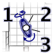
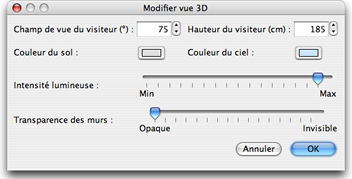

| Modification de la vue 3D | |||
Choisissez Vue 3D > Vue aérienne ou Vue 3D > Visite virtuelle pour passer d'un point de vue à l'autre dans la vue 3D.
Quand la Vue aérienne est sélectionnée, la vue 3D affiche votre logement en 3D vu de haut.
Dans ce mode, le déplacement de la souris vers la gauche ou la droite en maintenant son bouton
gauche enfoncé fait tourner
le logement autour d'un axe vertical positionné au centre du logement ; le déplacement de la souris
en avant ou en arrière en maintenant son bouton gauche enfoncé fait tourner le logement
autour d'un axe horizontal ;
la rotation de la roue de la souris permet de zoomer en avant ou en arrière dans la vue 3D. Quand la Visite virtuelle est sélectionnée, un visiteur virtuel vu de haut est aussi dessiné dans le plan du logement. Sa position et son angle sont mis à jour simultanément dans le plan et la vue 3D à chaque mouvement du visiteur. Ce visiteur virtuel est entouré par trois indicateurs.  |
|
Quand le pointeur de la souris est sur l'une des épaules du visiteur, celui-ci change d'aspect pour
indiquer que vous pouvez glisser-déposer ce point pour modifier l'angle de la tête ou du corps du visiteur.
Pendant que vous appuyez sur le bouton de la souris, une info-bulle indique la valeur de l'angle modifié. D'autres attributs de la vue 3D peuvent être modifiés en choisissant Vue 3D > Modifier....  Dans le panneau de la vue 3D, vous pouvez modifier le champ de vue du visiteur virtuel, sa hauteur,
la couleur du sol et du ciel (ou du plafond), l'intensité de la lumière et la transparence des murs. |
|